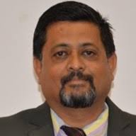

We are a technology training and a software development company established in July 2022.
The Primary objective of this initiative is to provide quality technical training on the current and emerging areas of technology.
Realizing the need to bridge the gap between the academics and the needs of the IT industry, we offer a range of courses to empower the students with in-depth knowledge
about the technologies, tools and processes adopted in IT industries in a professional way.
The IT companies have diverse expectations from the graduating students.
The industry wants the students should be ready to onboard the projects soon
after their graduation. However, if the students are not well trained on platforms
and tools, they need to undergo a six to one-year training programme.
We have designed the courses by taking inputs from several industry experts having 8-12 years of experience
and have carefully organized the content so the students can be trained systematically
to attain the skill level as required by the industry.
We have a number of live projects in the domain of AI and ML and also on web,
and the students undergoing internship will be given certain modules to be developed using
Agile model of software development.
We as a team wish to establish ourselves as an excellent training school
to cater to the job readniness of students coming from different streams of engineering.
We wish to offer our services with great quality and at an affordable price.
We offer placement training as well, to prepare the graduates from CS/IS/MCA/BCA and facilitate
their placements. The students joining our institute, would be trained on many facets so that
they get placed with ease. We have the vision of emerging as the number 1 finishing school in the north Karnataka region.

Dr. S.R.Mangalwede, CEO, jFork TS